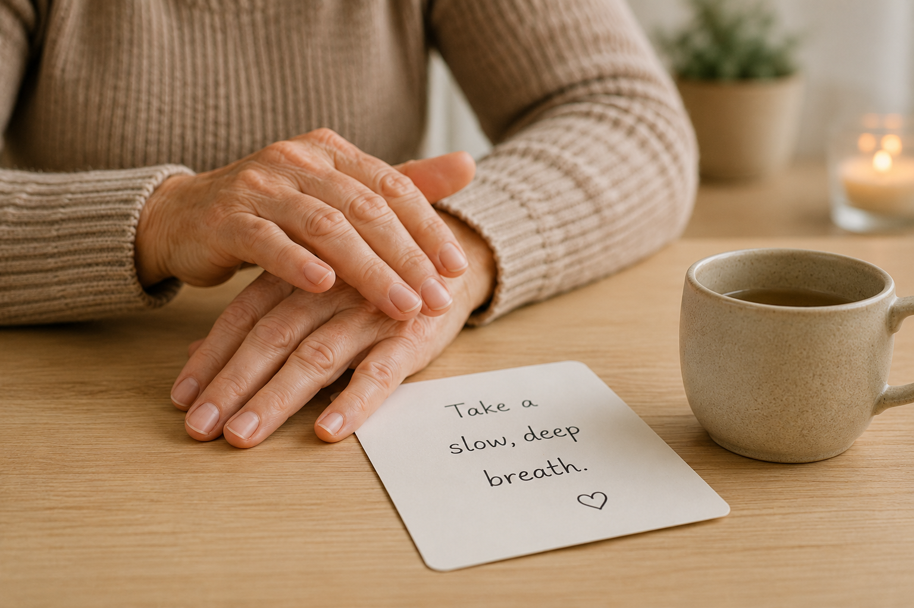

A simple self-help technique some NHS practitioners use alongside other support — now in WithYou's Calm Toolkit.

It's 2am, and Maria can't sleep. Joan had a rough night — confused, frightened, calling out for her mother. Maria stayed calm for her, the way she always does. But now, alone in the dark, her own heart is racing.
She opens WithYou and taps into the Calm Toolkit. Tonight she tries the EFT tapping exercise — gently tapping a sequence of points on the hand and face while naming what she's feeling out loud. "Even though I'm wound up right now, I'm allowing myself to calm down."
It feels strange the first time. But thirty seconds in, her shoulders drop. Her breathing slows.
EFT, or "tapping," is a self-help technique that combines gentle acupressure-point tapping with simple, spoken statements. It's used informally by some NHS practitioners as a complementary tool alongside more established treatments — not a replacement for therapy or medical care, but a small, calming ritual carers can turn to in the hardest moments.
For Maria, it's become part of her own care — a reminder that looking after Joan starts with looking after herself too.
WithYou's Calm Toolkit includes EFT tapping and other techniques to help carers reset.
Try WithYou